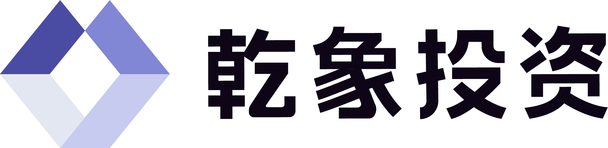
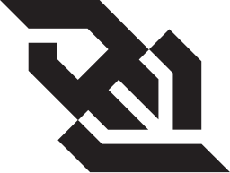

Ph.D. student · UC San Diego · CSE
Yichen Lin
Working with Prof. Yufei Ding on AI for science and chip design, architecture for agentic workloads, and the harnesses and benchmarks that measure them.
Scroll and the little scholar walks you around a night-time campus, or take the controls. There are eggs hidden everywhere.
waking up the island…
01Library Walk
About
I'm a Ph.D. student at UC San Diego, working with Prof. Yufei Ding. I did my undergraduate degree in Computer Science and Technology at Tsinghua University.
My research is about AI for science and chip design, and about the hardware side of AI agents: what agentic workloads actually do, and how future architectures should be built to run them. I also build the harnesses and benchmarks that keep all of this honest. The most recent one is TritonGym, a benchmark for agentic workflows that write Triton GPU kernels.
I like building things end to end, from a kernel's network stack to a grading platform to the small voxel campus behind this page.
My roommate and labmate is Zhuo Chen (Tsinghua Yao Class), who is also the best cook in the building.
Zhuo Chen Roommate & labmate · Tsinghua Yao Class · best cook in the building
02Two campuses
Education
-
UC San Diego Ph.D., Computer Science and Engineering
Advisor: Prof. Yufei Ding
2025 – present
Fiat lux, "let there be light": the University of California motto.
Home base: the CSE building and Picasso Lab. Yes, there is a house on the roof.
-
Tsinghua University B.S., Computer Science and Technology
2021 – 2025
自强不息，厚德载物
"Self-discipline and social commitment": the Tsinghua motto.
03The library
Publications
-
2026
TritonGym: A Benchmark for Agentic LLM Workflows in Triton GPU Code Generation
Summary
Benchmarks tool-augmented LLM workflows on Triton GPU code generation and frames the project around measurable systems behavior rather than demo-only prompting wins.
BibTeX
@misc{guan2026tritongym, title = {TritonGym: A Benchmark for Agentic LLM Workflows in Triton GPU Code Generation}, author = {Guan, Yue and Lin, Yichen and others}, note = {Under review at ICML 2026}, year = {2026} } -
2023
(Re)²H₂O: Autonomous Driving Scenario Generation via Reversely Regularized Hybrid Offline-and-Online Reinforcement Learning
Summary
Explores scenario generation for autonomous driving with a hybrid offline-and-online reinforcement learning setup, focusing on robustness and controllable scenario construction.
BibTeX
@inproceedings{niu2023re2h2o, title = {(Re)$^2$H$_2$O: Autonomous Driving Scenario Generation via Reversely Regularized Hybrid Offline-and-Online Reinforcement Learning}, author = {Niu, Haoyi and Ren, Kun and Lin, Yichen and others}, booktitle = {IEEE Intelligent Vehicles Symposium (IV)}, year = {2023} }
04The trail · newest first
Experience
-
Samsung Semiconductor Summer research intern · San Jose
Architecture for agentic AI workloads: runtime optimizations for agent pipelines, and simulation of how future accelerators should be designed to run them.
Objectives (4)
Research on agentic AI systems from the hardware side: how agent workloads behave, and what that implies for accelerator design.
- Developed and evaluated runtime optimizations for agentic AI pipelines, and explored their hardware design implications through simulation, toward accelerators that better support agent workloads.
- Applied agentic AI methods to build a test-debug framework prototype for MLOps.
- Explored multi-agent coordination, structured action spaces, adaptive memory for long-term reasoning, and trust and human-AI collaboration; designed and ran experiments to evaluate the approaches.
- Documented findings and presented insights to the research team.
Keywords: Agentic workloads Accelerator design Runtime optimization Multi-agent systems MLOps
Jun – Sep 2026
-
Picasso Lab, UC San Diego CSE Research intern
Built a CXL system simulator for large-model communication; set up lab websites and a RAG pipeline for reading papers.
Objectives (2)
Worked on systems support for large-model infrastructure and research tooling in an academic lab setting.
- Developed a CXL system simulator for large model communication.
- Helped set up lab websites and use RAG to parse academic papers.
Keywords: CXL simulator RAG Lab websites
Mar 2024 – Feb 2025
-

Metabit Quantitative developer intern
Sped up data parsing and added streaming reads to the internal AI platform.
Objectives (1)
Focused on backend-facing performance and streaming improvements for an internal AI platform.
- Optimized data parsing and added streaming read support for AI Platform.
Keywords: Data parsing Streaming reads
Sep – Nov 2024
-

Tencent, TiMi Studio Game developer intern
Client work on the Monster Hunter mobile game, including voice-controlled teammates.
Objectives (1)
Built gameplay-adjacent client features and explored voice-driven teammate interaction in a production game environment.
- Developed Monster Hunter mobile game client with voice-controlled teammates.
Keywords: Monster Hunter mobile Voice-controlled teammates
Jun – Jul 2024
-

Disney+ Hotstar Algorithm developer intern
Optimised the search page and fine-tuned the recommendation model for TPUs.
Objectives (1)
Worked on ranking and search quality, with emphasis on recommendation and serving efficiency.
- Optimized search page, fine-tuned recommendation model for TPUs.
Keywords: Search page Recommendation model TPUs
Mar – Jun 2024
-
ByteDance, Lark Backend developer intern
Built the AskAI assistant for sales-data analysis on Redis and RocketMQ.
Objectives (1)
Implemented backend support for AskAI workflows using message queues and caching systems in a sales-analysis context.
- Developed AskAI assistant using Redis and RocketMQ for sales data analysis.
Keywords: AskAI Redis RocketMQ
Jun – Nov 2023
05The workshop
Projects
-
Operating systems · networking · graduation project
Networking stack for a monolithic-kernel operating system. Graduation project.
Details
Implemented the networking component for a monolithic kernel OS and treated the project as a systems-oriented graduation deliverable.
Systems project
-
Django · WebSocket · full-stack messaging
Real-time chat over WebSocket with a Django backend and a web front end.



Details
Built a real-time chat system around Django and WebSocket flows, with emphasis on reliable message delivery and practical web integration.
Full-stack project
-
Rust · evaluation platform · teaching infrastructure
An online judge for data-structure coursework: sandboxed grading and a submission queue.
Details
Built a grading and evaluation workflow for coursework submissions, using Rust to keep the platform lightweight and systems-oriented.
Systems tooling
-
TritonGym
LLM agents · Triton codegen · benchmarking
Benchmark and evaluation harness for LLM agents that write Triton GPU kernels. See the paper above. (Triton the GPU language shares its name with UCSD's mascot; the statue is a happy coincidence.)

Details
Frames GPU code generation as a measurable agentic workflow problem, with benchmarks meant to surface systems behavior rather than prompt-only demos.
Research project
On the workbench
- PythonHigh
 C++High
C++High- RustStrong
- GoStrong
- TypeScriptWorking
 JavaScriptWorking
JavaScriptWorking- VerilogFamiliar
 Linux
Linux- Vim
 LaTeX
LaTeX- WebSocket
- Django
 MongoDB
MongoDB
$ _06Sun God Lawn · by the pier
Contact
yil384@ucsd.edu · (858) 319-7361
Computer Science and Engineering, UC San Diego, La Jolla, CA.
Questions, collaborations, or an egg I did not know about: please write. The mailbox has a flag for a reason.
Quick subject Collaboration Question about TritonGym I found an egg
Save point · progress lives in this browser
The end?
Reset page progress? Eggs are kept.